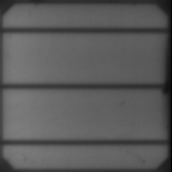
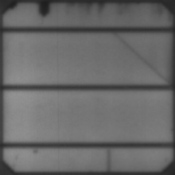
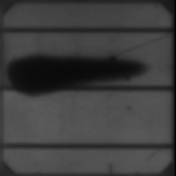
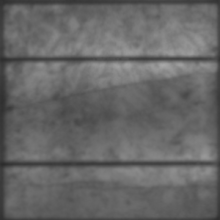
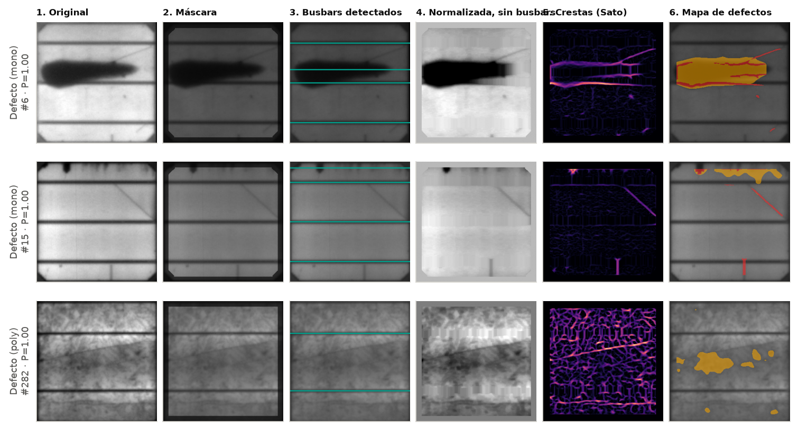
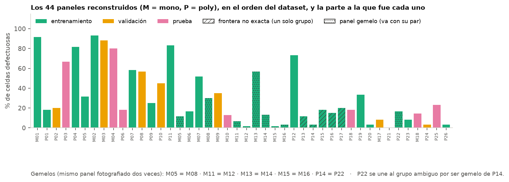

sana
sana
grieta
zona apagada
poly: granos que engañanCasi todo es procesamiento clásico, con temas del curso. La red es solo la última etapa. Cada bloque dice en qué semana se trabaja y cómo está hoy.
Lo más delicado del proyecto, partir sin fuga, ya está hecho y congelado en data/particion.csv. Lo que sigue es mejorar el procesamiento sobre una base honesta.

src/preproc.py sobre tres celdas defectuosas (figura f2).Cada semana responde una pregunta y cierra con un avance (informe + presentación), que se arma cuando se pide con lo que haya hasta ese momento.
docs/01, docs/02)torch + CUDA, unos 7 s por época
| # | Criterio, fijado antes de medir | Semana |
|---|---|---|
| 1 | Brillo residual en las filas del busbar, respecto a sus vecinas · apoyo | S2 |
| 2 | Cambio introducido fuera de esas filas · apoyo | S2 |
| 3 | AUC de la CNN entrenada con cada alternativa · decide | S3 |
| 4 | Tiempo de cómputo por celda · apoyo | S2 |
scripts/04_entrenar_cnn.py.
sistema-congelado. Desde aquí no se ajusta ningún parámetro.split == "test". Si se corre dos veces, deja de ser una medición honesta.| 1 | Aplicación: recibe una celda con su tipo y muestra veredicto, etapas y mapa. En la demo, celdas de los paneles de prueba |
| 2 | Código reproducible en GitHub, con la etiqueta v1.0 |
| 3 | Informe breve y sustentación |
main de lo que corre. Se regeneran figuras y métricas desde los scripts.git tag avance-N: cualquiera puede reproducir lo que se mostró.scripts/e EDA · p partición · f pipeline · n normalización · b busbars · m mapas · c CNN · t pruebamain siempre corredata/particion.csv, no se sube| Preprocesamiento y busbars (S1–S2) | nombre |
| Mapas de grietas y zonas apagadas (S3) | nombre |
| CNN, GPU, prueba y demo (S3–S4) | nombre |
| Editor del avance: rota cada semana | S1 · S2 · S3 · S4 |
docs/plan_semanal.md8